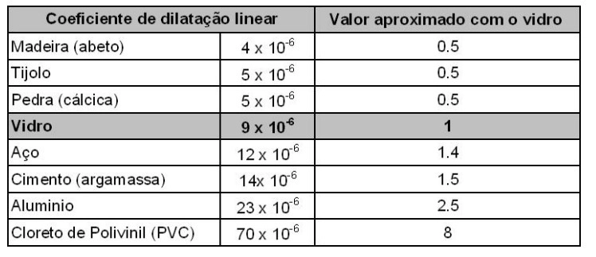

Dilatação térmica e sua relação com o vidro
O que é a dilatação térmica?Acontece quando um determinado corpo sofre um aumento na sua temperatura, resultando no aumento do seu volume. Isso acontece porque no momento em que a temperatura é aumentada, as moléculas presentes nesse corpo, se agitam e geram o aumento da distância entre elas.
O que dilata o vidro?Com o calor o vidro dilata e no frio ele contrai, por isso a folga é um fator determinante para seu desempenho correto em qualquer tipo de esquadria. Se a folga é muito pequena, ela não permite a movimentação do vidro dentro do caixilho. Na física, o coeficiente de dilatação linear do vidro pirex é 3.10-6 ºC-1 e do vidro comum é 9.10-6 ºC-1, ou seja, três vezes menor.
Que material mais dilata?
Além disso, a dilatação depende também do tipo de material de que o corpo é feito, motivo pelo qual é muito importante considerar os respectivos coeficientes. Dos sólidos constantes na tabela acima, o que menos se dilata é o Pyrex, que tem o coeficiente menor, enquanto o chumbo lidera com o maior coeficiente.